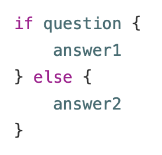

Math Operators
Like the math operators in may other programming languages, the operators in the Swift programming langue have the similar meanings and usage. In general, an operator is a special symbol or phrase that can be used to check, change or combine values. We already learned most of the math operators, for instance, we have the addition operator ( + ) that can simplly add two numbers, such as 1 + 2. In addition, Swift also has comparison operators, logical operators, and more. Below is the basic summary of all operators in Swift
Some basic Operators
- Arithmetic Operators
- Comparison Operators
- Logical Operators
- Compund Assignment Operators
- Ternary Conditional Operator
- Range Operators
Arithmetic Operator
Swift supports the four standard arithmetic operators for all numberic types, and the definition is straightforward.
| Types | Example |
|---|---|
| Addition ( + ) | 1 + 3 |
| Subtraction ( - ) | 5 - 3 |
| Multiplication ( * ) | 2 * 4 |
| Division ( / ) | 8.0 / 2.5 |
Comparison Operators
The Comparison Operators basically compare two values and reutrn a Bool value ( True or False ). Therefore, the comparison operator will indicate whether or not the comparison statement is true ( Return True) or false ( Return False ). There are 6 comparison operators current used in Swift, and the usage is similar to the languages you learned before. In addition to the value comparison, this operator can also be used in conditional statements, such as the if statement.
- Equal ( == )
- Not equal to ( != )
- Greater than ( > )
- Less than ( < )
- Greater than or equal to ( >= )
- Less than or equal to ( <= )
In addition, Swift provides two identity operators: === & !== Which is used to test whether two object references both refer to the same object instance. For example
Example use of Identity Operator
Source: Swift.org
Logical Operator
The Logical Operator combine or modify the Boolean logic values true and false. The Swift supprots three standard logcial operators that origional found in C-based languages.
| Types | Example |
|---|---|
| Logical NOT ( ! ) | !a Means not a |
| Logical AND ( && ) | a && b Means a and b |
| Logical OR ( || ) | 2 || 4 Means it is 2 or 4 |
Compund Assignment Operators
The definition is straightforward, which is to add one operator with ( = ), for example: +=, -=, *=, and more. It's looks like abbreviation. For example
a = 1
( a += 1 ) == ( a = a + 1 )
b=1
( b *= 1 ) == ( b = b * 1 )
Ternary Conditional Operator
The ternary conditional operator is a special operator with three parts, which includes question ? answer1 : answer2.
For example
let Num = ( 3 > 1 ? 10 : 20 )
In this example, the value of Num is either 10 or 20, and the final values is determined by the question: 3 > 1 ?
If the question returns true, then Num will be the first answer ( answer1), otherwise it will be the second answer ( answer2)
What's more, the ternary conditional operator can also be presented in this way for better understand.
Range Operators
The Range Operators are shortcuts for expressing a range of values in Swift, and it is useful when iterating ( Loop), for intance, it can be used in for-in loop. It can be represented as (a...b)
Example use of Range Operator
Source: Swift.org
In addition, the Range can be One-Sided. It means that there can be only one value in the Range Operator, for instance, it can be (2.....) or (....2)
Example use of One-side Range Operator
Source: Swift.org